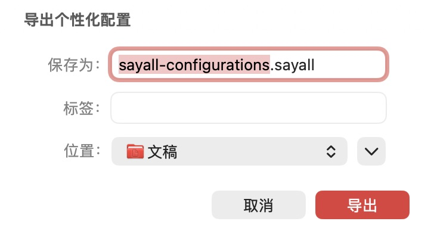
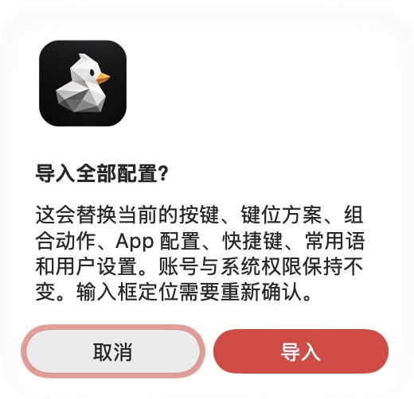

完整配置备份遗漏与文件导入分流
证据
用户提供的个人备份可通过原分享合同校验。 文件仅有一个无绑定方案和宿主设置，动作与 App 配置集合为空。 这只能证明文件结构可读，不能证明导出完整。 没有原导出时的完整存储快照，不能还原当时各库的内容。
确认的原因
设置页复用了分享导出图。 该图只收集当前方案和引用依赖，并裁剪未引用快捷键。 宿主设置只覆盖部分用户偏好，不包含全部设备配置。 Finder 请求只检查扩展名，统一送到键位方案导入。 原合同缺少生效的平台门禁和来源 Build。
隔离测试确认：分享导出会丢弃未引用快捷键。 同一存储通过完整归档导出后可保留该快捷键。
修复
宿主持有独立的 macOS 完整备份格式与读取器标识。 文件记录产品、平台、来源版本和 Build。 私有模块通过窄接口导出全部原生配置，不再按引用裁剪。 恢复保留对象 ID、版本、设备作用域、选择状态和 App 规则。 双击按文件内容分流。 完整备份进入设置页。
写入沿用事务校验、并发保护和失败回滚。
账号、授权、配对身份、历史和录音不迁移。 输入框指纹需要重新学习，脚本需要重新授权。 原始用户文件保持不变。文件内没有的数据不能凭空恢复。
验证与边界
- 公开宿主：
swift test --disable-keychain --scratch-path .build-public。 - 私有三个模块分别执行
swift test --disable-keychain。 - 新回归覆盖全部设备、未引用 App、嵌套动作、全部版本、未引用快捷键、方案规则和常用语。
- 新回归覆盖平台与版本拒绝、非法写入位置拒绝和失败回滚。
- 2026-10-20：公开完整 909 项、统一私有二进制集成 918 项测试通过。
- 工程自测 48 项、市场合同 21 项和仓库治理检查通过。
- 带私有构件的 Release 构建通过。
- 原生设置页在隔离存储中成功导出、校验并恢复完整备份。
- 文件打开回归使用真实测试文件，覆盖挂载前后和重复请求。
- 新完整格式、旧个人备份和社区键位方案的内容分流均有回归。
- 正式签名安装包的系统 Finder 分发和跨 Mac 迁移仍待实测。
首次测试装配缺少私有资源 Bundle，导致运行失败。 补齐资源后，同一二进制测试通过。 默认旧构建目录还缓存了旧私有模块，导致自检附带构建失败。 本轮保留失败日志，用独立构建目录验证公开与私有构建。 自检单独运行 48 项，并复用已完成的隔离 Release 构建。 没有放宽业务测试或修改业务来掩盖装配问题。
- 本次不发布安装包。真实遥控器、第三方 App 和跨 Mac 迁移不在自动化证明范围内。
测试步骤见 完整配置备份测试。
文件与影响范围
| 文件组 | 修改原因 |
|---|---|
MacConfigurationBackup.swift |
定义 macOS 完整备份和按内容分流。 |
AppSettings.swift |
保存全部设备、App 配置、绑定和用户偏好。 |
MacroFeatureIntegration.swift 与 AppSettingsPortableTransfer.swift |
设置备份改用完整归档。社区分享保留原接口。 |
MembershipFeatureIntegration.swift |
通过私有接口备份常用语。 |
BridgeAppModel.swift |
校验、恢复、回滚并刷新音频和按键设置。 |
SettingsView.swift 与本地化资源 |
打开系统保存窗口，确认恢复并按内容选择入口。 |
Info.plist |
更新文档显示名称，保留原类型标识和扩展名。 |
| 测试、自检列表、产品规范和测试手册 | 覆盖完整性、持久化、失败与兼容边界。 |
没有修改后端、会员权益或发布资产名称。 本次保留系统登录项注册和向导进度；它们不是可迁移验证证据。
页面证据
以下为生产设置页的隔离本地验证。 内部验证 App 只用于页面检查，不作为安装包分发。


| 文件 | 格式与尺寸 | SHA-256 |
|---|---|---|
export-save-panel.jpg |
JPEG，728 × 408 | b603047f93f69059ceabd7dbe708dc167dd633e474667eaabed0b659003529bd |
import-confirm.jpg |
JPEG，520 × 502 | d0f453cfbc988e77355b456a4459b82600d77289061368d4df84c6e6647778d3 |
最新主线补验
私有修复已通过 PR #245 合入。 标准 SwiftPM Tag 2.2.1 固定到该合并提交。 根包 Debug 完整测试和 Release 产品构建通过。 发布脚本测试模式问题由独立 PR #703 修复。
公开 PR #702 的首次 CI 在挂载后打开文件用例失败。 请求仍留在队列，没有被当前页面消费。 原入口依赖 SwiftUI 状态差异与首次页面刷新。 修复改用请求发布订阅，并在主循环接收已存储的请求。
无私有组件时直接处理，不等待不存在的导入观察器。 测试增加初次显示同一轮排入请求，保留重复打开检查。 没有延长测试超时，也没有删除成功条件。 本地首次时序实验未复现 CI 失败，保留这一验证边界。
私有二进制集成进一步确认导入预览没有打开。 请求已经传入私有页，但首次挂载前的请求没有被消费。 私有生产视图回归在原实现稳定失败。
私有 PR #247 改为订阅请求，修复后同一用例通过。 宿主文件打开四组场景及重复打开均通过。 该修复升级到 2.2.2；2.2.1 保持原位。
完整私有集成首次运行也触发发布 fixture 的环境差异。 发布控制测试按现行 CI 在公开模式单独验证。 私有完整测试不重复该公开发布 fixture。 所有失败日志保存在仓库外，没有删改断言。
#247 在独立目录的私有根包完整测试和 Release 构建通过。 根包测试保留两项既有跳过项。 复用旧目录曾报 Sentry 模块解析失败。 独立目录验证没有修改源码或降低测试条件。